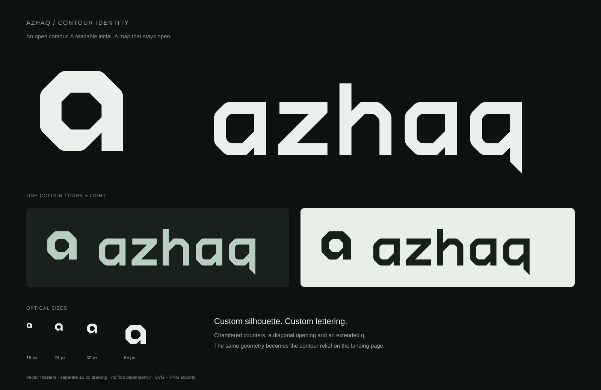
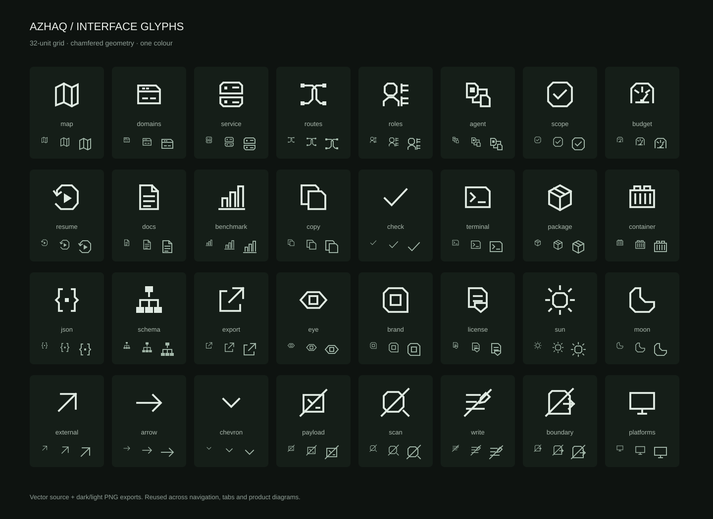
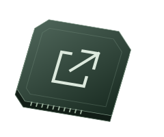

Mark
16 px minimum with the micro master. Use the main mark at 24 px and above. Leave at least one-quarter of the mark’s width clear on every side.
AZHAQ / IDENTITY
A lowercase a, drawn as the boundary of a mapped surface. The diagonal opening and broad counter give the silhouette its character. The wordmark uses the same cuts and proportions.

The relief repeats the mark’s outline as stacked contours. The survey sheet adds plotted points and a connecting route. Both are editable SVG illustrations, not product screenshots.


16 px minimum with the micro master. Use the main mark at 24 px and above. Leave at least one-quarter of the mark’s width clear on every side.
Keep the symbol and wordmark proportions fixed. Minimum width: 140 px. Use the light SVG on dark backgrounds and the dark SVG on light backgrounds.
Ink #111614
Paper #ECF0ED
Sage #B9CEC1
Keep the logo in one flat colour.
Three vector studies were compared at small sizes. The Z stayed too literal; the layered route lost clarity at 16 px. The contour A supplied the clearest initial and the most useful geometry for the rest of the page.
AZHAQ / INTERFACE
Square terminals, clipped corners and a 32-unit grid. Drawn for the page’s navigation, controls and product illustrations.




SVG masters, an SVG sprite, transparent PNG exports and responsive workspace illustrations.
Hubot Sans Condensed
Display · 600
Domains, services, routes and access.
Hubot Sans
Body · 400 / 600
azhaq run -url example.comMonaspace Krypton
Code · 400
| Role | Desktop | Mobile |
|---|---|---|
| Hero | up to 96 px | 44–56 px |
| Section heading | 44 px | 34 px |
| Body | 16 px | 16 px |
| Controls and links | 14 px | 14 px |
| Code | 13 px | 13 px |
| Metadata | 12 px | 12 px |
Fonts are self-hosted; the logo stays independent vector artwork. Icon controls have accessible names, keyboard focus and tooltips. This specimen documents the design system, not a complete accessibility audit.